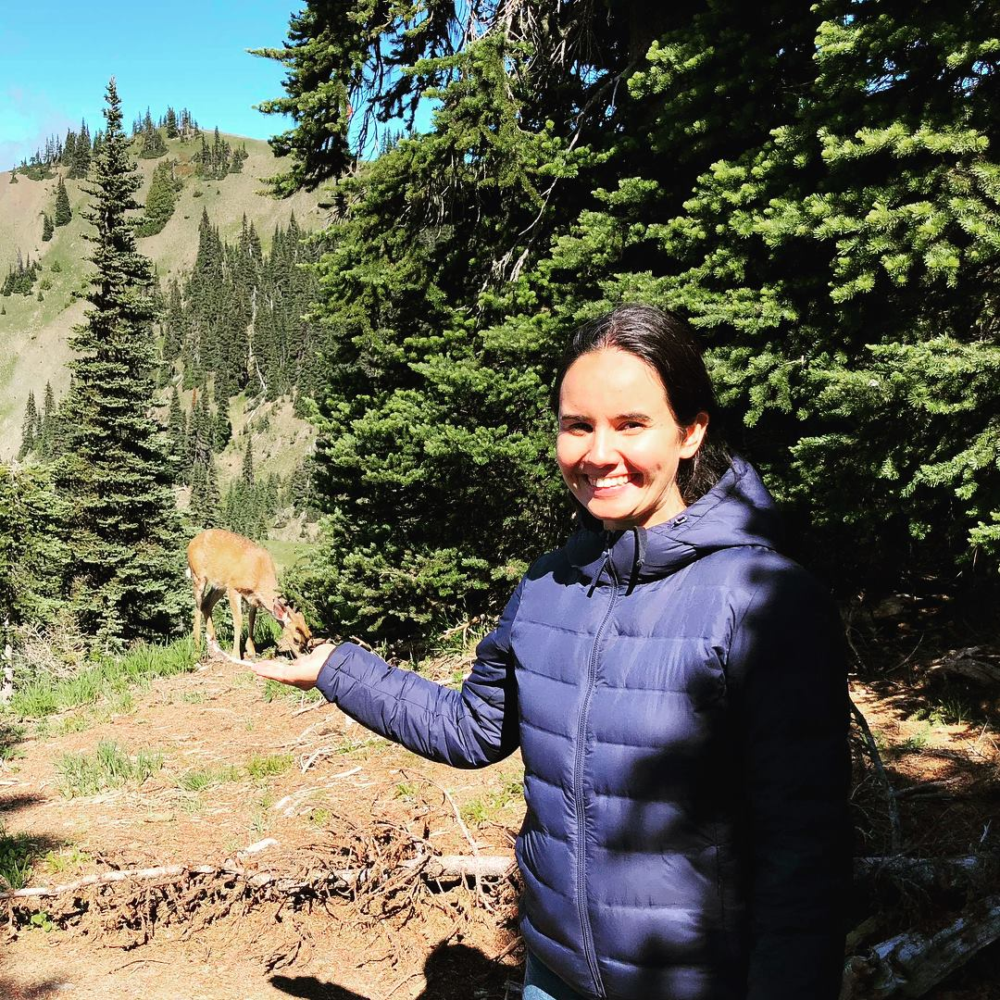

This is a portfolio of an Epicodus student Asia Kaplanyan.

My projects include the following:
- Animal shelter page
- Band web page
- Github repository - https://github.com/asyakap/Band-web-page
- This is a web-page of the Television band representing basic info about the band and their upcoming concerts.
- Technologies used: HTML, CSS.
- Co-authored by Noah Atkinson.
- Resort page
- Github repository - https://github.com/asyakap/resort
- This is a web-page of the Resort showing resort info, contact information and accomodations available.
- Technologies used: HTML, CSS.
- Co-authored by Sarah Andyshak.
- Cookie-recipe
- My first web pages
- Github repository - https://github.com/asyakap/my-first-webpage
- This webpage contains four first web pages that I created:.
- Favorite places
- Favorite things
- My-first webpage
- My-pet-page
- Technologies used: HTML, CSS.
- Co-authored by David Jandron and Sarah Andyshak.
"About me"
Education
- January 2023 - ... - Epicodus bootcamp
- 2002-2007 - Moscow Institute of Electronic Technologies, major - Applied Mathematics
Job experience
- September 2015 - April 2020 - Applause, Test Engineer
- Unrelated experience in Finances and Finance Journalism
Other info
My hobbies include:
- Fishing
- Singing in choir
- Traveling: visited more than 30 countries
Additional skills:
- Foreign languages: German, Russian
- Understanding of Algorithms and Data Structures
- Basic programming skills in C++ and MathLab